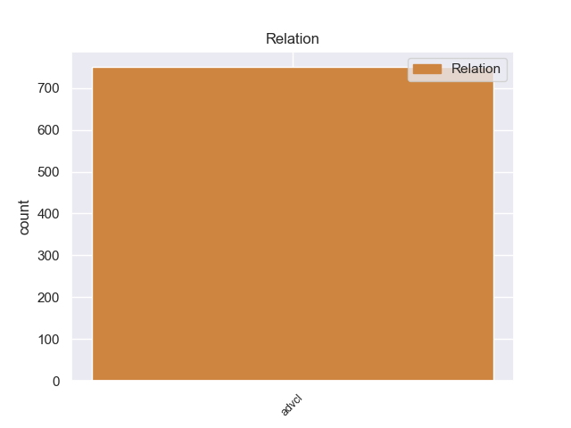
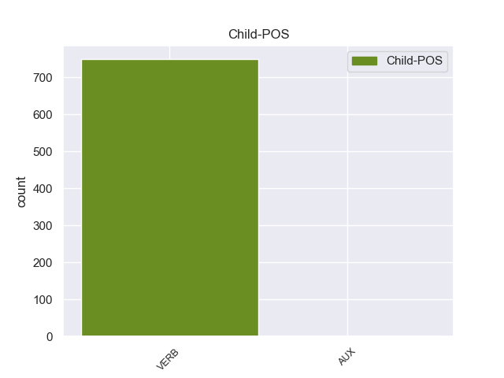

Distribution of features within this leaf


Agreement Rules sorted by frequency.
- When the dependent token is the adverbial clause modifier(advcl) of the head token,
1 Para _ _ _ _ 0 _ _ _
2 poder _ _ _ _ 0 _ _ _
3 estudiar _ _ _ _ 0 _ _ _
4 los _ _ _ _ 0 _ _ _
5 mejor _ _ _ _ 0 _ _ _
6 , _ _ _ _ 0 _ _ _
7 Ghazali _ _ _ _ 0 _ _ _
8 introdujo introducir VERB _ Mood=Ind|Number=Sing|Person=3|Tense=Past|VerbForm=Fin 0 _ _ _
9 varios _ _ _ _ 0 _ _ _
10 peces _ _ _ _ 0 _ _ _
11 en _ _ _ _ 0 _ _ _
12 un _ _ _ _ 0 _ _ _
13 tanque _ _ _ _ 0 _ _ _
14 y _ _ _ _ 0 _ _ _
15 , _ _ _ _ 0 _ _ _
16 tras _ _ _ _ 0 _ _ _
17 varias _ _ _ _ 0 _ _ _
18 semanas _ _ _ _ 0 _ _ _
19 de _ _ _ _ 0 _ _ _
20 aclimatación _ _ _ _ 0 _ _ _
21 , _ _ _ _ 0 _ _ _
22 comenzó _ _ _ _ 0 _ _ _
23 a _ _ _ _ 0 _ _ _
24 grabar _ _ _ _ 0 _ _ _
25 sus _ _ _ _ 0 _ _ _
26 sonidos _ _ _ _ 0 _ _ _
27 , _ _ _ _ 0 _ _ _
28 según _ _ _ _ 0 _ _ _
29 recoge recoger VERB _ Mood=Ind|Number=Sing|Person=3|Tense=Pres|VerbForm=Fin 8 advcl _ _
30 el _ _ _ _ 0 _ _ _
31 periódico _ _ _ _ 0 _ _ _
32 New _ _ _ _ 0 _ _ _
33 Zealand _ _ _ _ 0 _ _ _
34 Herald _ _ _ _ 0 _ _ _
35 . _ _ _ _ 0 _ _ _
Disagree Examples:
1 Rouge _ _ _ _ 0 _ _ _
2 incluso _ _ _ _ 0 _ _ _
3 guardó guardar VERB _ Mood=Ind|Number=Sing|Person=3|Tense=Past|VerbForm=Fin 0 _ _ _
4 a _ _ _ _ 0 _ _ _
5 Ace _ _ _ _ 0 _ _ _
6 en _ _ _ _ 0 _ _ _
7 su _ _ _ _ 0 _ _ _
8 vientre _ _ _ _ 0 _ _ _
9 durante _ _ _ _ 0 _ _ _
10 20 _ _ _ _ 0 _ _ _
11 meses _ _ _ _ 0 _ _ _
12 , _ _ _ _ 0 _ _ _
13 para _ _ _ _ 0 _ _ _
14 que _ _ _ _ 0 _ _ _
15 el _ _ _ _ 0 _ _ _
16 Gobierno _ _ _ _ 0 _ _ _
17 Mundial _ _ _ _ 0 _ _ _
18 ignorase ignorar VERB _ Mood=Sub|Number=Sing|Person=3|Tense=Imp|VerbForm=Fin 3 advcl _ _
19 que _ _ _ _ 0 _ _ _
20 era _ _ _ _ 0 _ _ _
21 hijo _ _ _ _ 0 _ _ _
22 de _ _ _ _ 0 _ _ _
23 Roger _ _ _ _ 0 _ _ _
24 . _ _ _ _ 0 _ _ _
1 Como _ _ _ _ 0 _ _ _
2 se _ _ _ _ 0 _ _ _
3 ve ver VERB _ Mood=Ind|Number=Sing|Person=3|Tense=Pres|VerbForm=Fin 14 advcl _ _
4 si _ _ _ _ 0 _ _ _
5 una _ _ _ _ 0 _ _ _
6 de _ _ _ _ 0 _ _ _
7 las _ _ _ _ 0 _ _ _
8 dos _ _ _ _ 0 _ _ _
9 fuerzas _ _ _ _ 0 _ _ _
10 fallase _ _ _ _ 0 _ _ _
11 los _ _ _ _ 0 _ _ _
12 acontecimientos _ _ _ _ 0 _ _ _
13 se _ _ _ _ 0 _ _ _
14 sucederían suceder VERB _ Mood=Cnd|Number=Plur|Person=3|VerbForm=Fin 0 _ _ _
15 muy _ _ _ _ 0 _ _ _
16 repentinamente _ _ _ _ 0 _ _ _
17 hasta _ _ _ _ 0 _ _ _
18 volver _ _ _ _ 0 _ _ _
19 a _ _ _ _ 0 _ _ _
20 recuperar _ _ _ _ 0 _ _ _
21 el _ _ _ _ 0 _ _ _
22 equilibrio _ _ _ _ 0 _ _ _
23 . _ _ _ _ 0 _ _ _
1 Como _ _ _ _ 0 _ _ _
2 se _ _ _ _ 0 _ _ _
3 ve _ _ _ _ 0 _ _ _
4 si _ _ _ _ 0 _ _ _
5 una _ _ _ _ 0 _ _ _
6 de _ _ _ _ 0 _ _ _
7 las _ _ _ _ 0 _ _ _
8 dos _ _ _ _ 0 _ _ _
9 fuerzas _ _ _ _ 0 _ _ _
10 fallase fallar VERB _ Mood=Sub|Number=Sing|Person=3|Tense=Imp|VerbForm=Fin 14 advcl _ _
11 los _ _ _ _ 0 _ _ _
12 acontecimientos _ _ _ _ 0 _ _ _
13 se _ _ _ _ 0 _ _ _
14 sucederían suceder VERB _ Mood=Cnd|Number=Plur|Person=3|VerbForm=Fin 0 _ _ _
15 muy _ _ _ _ 0 _ _ _
16 repentinamente _ _ _ _ 0 _ _ _
17 hasta _ _ _ _ 0 _ _ _
18 volver _ _ _ _ 0 _ _ _
19 a _ _ _ _ 0 _ _ _
20 recuperar _ _ _ _ 0 _ _ _
21 el _ _ _ _ 0 _ _ _
22 equilibrio _ _ _ _ 0 _ _ _
23 . _ _ _ _ 0 _ _ _
1 Por _ _ _ _ 0 _ _ _
2 eso _ _ _ _ 0 _ _ _
3 , _ _ _ _ 0 _ _ _
4 el _ _ _ _ 0 _ _ _
5 Hesperia _ _ _ _ 0 _ _ _
6 Lanzarote _ _ _ _ 0 _ _ _
7 presenta presentar VERB _ Mood=Ind|Number=Sing|Person=3|Tense=Pres|VerbForm=Fin 0 _ _ _
8 dos _ _ _ _ 0 _ _ _
9 propuestas _ _ _ _ 0 _ _ _
10 para _ _ _ _ 0 _ _ _
11 que _ _ _ _ 0 _ _ _
12 enamorados _ _ _ _ 0 _ _ _
13 y _ _ _ _ 0 _ _ _
14 solteros _ _ _ _ 0 _ _ _
15 se _ _ _ _ 0 _ _ _
16 diviertan divertir VERB _ Mood=Sub|Number=Plur|Person=3|Tense=Pres|VerbForm=Fin 7 advcl _ _
17 por _ _ _ _ 0 _ _ _
18 igual _ _ _ _ 0 _ _ _
19 en _ _ _ _ 0 _ _ _
20 un _ _ _ _ 0 _ _ _
21 entorno _ _ _ _ 0 _ _ _
22 paradisíaco _ _ _ _ 0 _ _ _
23 . _ _ _ _ 0 _ _ _
1 Dentro _ _ _ _ 0 _ _ _
2 también _ _ _ _ 0 _ _ _
3 de _ _ _ _ 0 _ _ _
4 la _ _ _ _ 0 _ _ _
5 actualidad _ _ _ _ 0 _ _ _
6 municipal _ _ _ _ 0 _ _ _
7 , _ _ _ _ 0 _ _ _
8 resaltar _ _ _ _ 0 _ _ _
9 que _ _ _ _ 0 _ _ _
10 el _ _ _ _ 0 _ _ _
11 alcalde _ _ _ _ 0 _ _ _
12 anunció _ _ _ _ 0 _ _ _
13 ayer _ _ _ _ 0 _ _ _
14 que _ _ _ _ 0 _ _ _
15 la _ _ _ _ 0 _ _ _
16 Xunta _ _ _ _ 0 _ _ _
17 ya _ _ _ _ 0 _ _ _
18 dio dar VERB _ Mood=Ind|Number=Sing|Person=3|Tense=Past|VerbForm=Fin 0 _ _ _
19 orden _ _ _ _ 0 _ _ _
20 a _ _ _ _ 0 _ _ _
21 la _ _ _ _ 0 _ _ _
22 empresa _ _ _ _ 0 _ _ _
23 responsable _ _ _ _ 0 _ _ _
24 para _ _ _ _ 0 _ _ _
25 que _ _ _ _ 0 _ _ _
26 retire retirar VERB _ Mood=Sub|Number=Sing|Person=3|Tense=Pres|VerbForm=Fin 18 advcl _ _
27 de _ _ _ _ 0 _ _ _
28 el _ _ _ _ 0 _ _ _
29 cauce _ _ _ _ 0 _ _ _
30 de _ _ _ _ 0 _ _ _
31 el _ _ _ _ 0 _ _ _
32 Ulla _ _ _ _ 0 _ _ _
33 , _ _ _ _ 0 _ _ _
34 en _ _ _ _ 0 _ _ _
35 Pontevea _ _ _ _ 0 _ _ _
36 , _ _ _ _ 0 _ _ _
37 unos _ _ _ _ 0 _ _ _
38 andamios _ _ _ _ 0 _ _ _
39 que _ _ _ _ 0 _ _ _
40 cayeron _ _ _ _ 0 _ _ _
41 el _ _ _ _ 0 _ _ _
42 río _ _ _ _ 0 _ _ _
43 hace _ _ _ _ 0 _ _ _
44 bastantes _ _ _ _ 0 _ _ _
45 meses _ _ _ _ 0 _ _ _
46 , _ _ _ _ 0 _ _ _
47 después _ _ _ _ 0 _ _ _
48 de _ _ _ _ 0 _ _ _
49 un _ _ _ _ 0 _ _ _
50 arreglo _ _ _ _ 0 _ _ _
51 en _ _ _ _ 0 _ _ _
52 el _ _ _ _ 0 _ _ _
53 viejo _ _ _ _ 0 _ _ _
54 puente _ _ _ _ 0 _ _ _
55 sobre _ _ _ _ 0 _ _ _
56 este _ _ _ _ 0 _ _ _
57 río _ _ _ _ 0 _ _ _
58 . _ _ _ _ 0 _ _ _